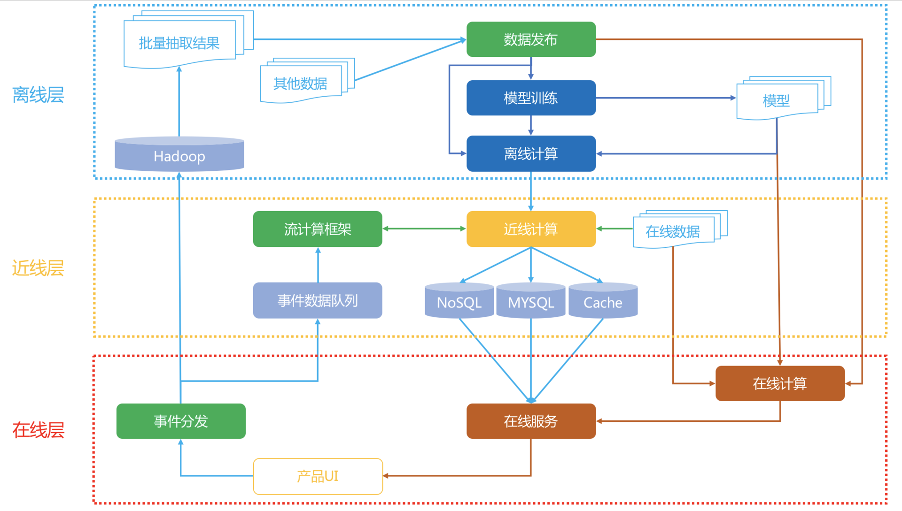
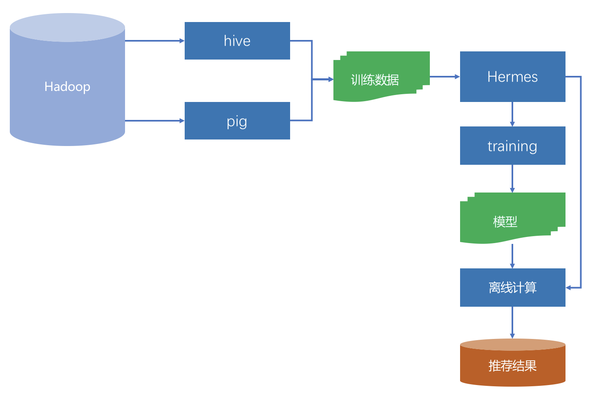
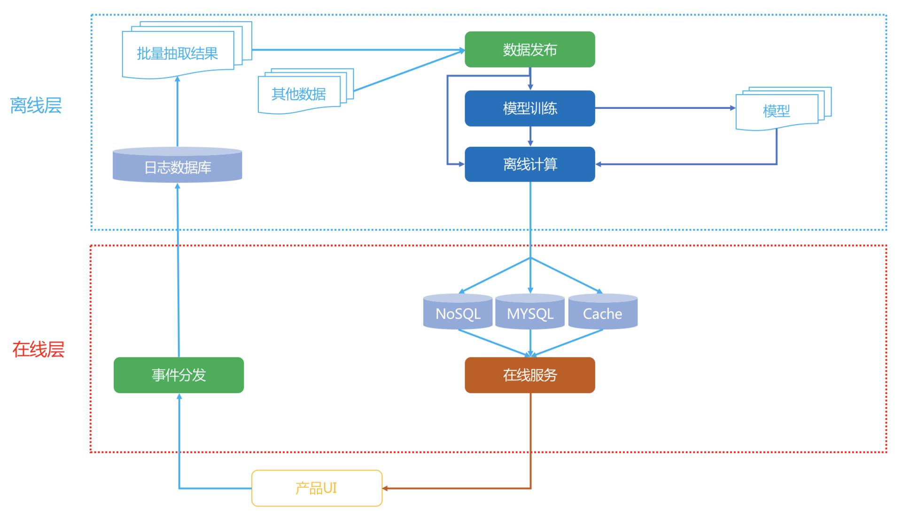
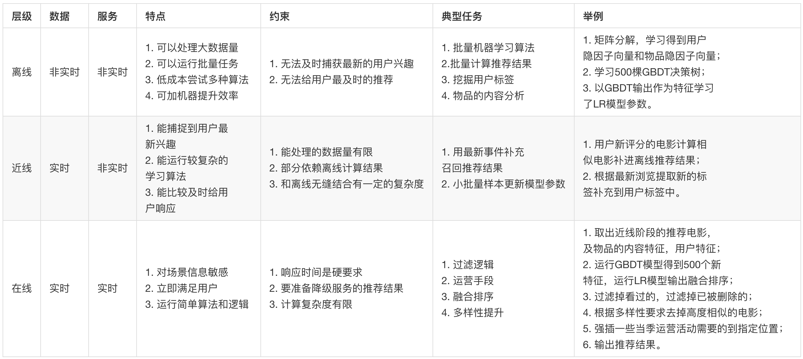

- 00 开篇词 用知识去对抗技术不平等.md.html
- 01 你真的需要个性化推荐系统吗_.md.html
- 02 个性化推荐系统有哪些绕不开的经典问题？.md.html
- 03 这些你必须应该具备的思维模式.md.html
- 04 画鬼容易画人难：用户画像的“能”和“不能”.md.html
- 05 从文本到用户画像有多远.md.html
- 06 超越标签的内容推荐系统.md.html
- 07 人以群分，你是什么人就看到什么世界.md.html
- 08 解密“看了又看”和“买了又买”.md.html
- 09 协同过滤中的相似度计算方法有哪些.md.html
- 10 那些在Netflix Prize中大放异彩的推荐算法.md.html
- 11 Facebook是怎么为十亿人互相推荐好友的.md.html
- 12 如果关注排序效果，那么这个模型可以帮到你.md.html
- 13 经典模型融合办法：线性模型和树模型的组合拳.md.html
- 14 一网打尽协同过滤、矩阵分解和线性模型.md.html
- 15 深度和宽度兼具的融合模型 Wide and Deep.md.html
- 16 简单却有效的Bandit算法.md.html
- 17 结合上下文信息的Bandit算法.md.html
- 18 如何将Bandit算法与协同过滤结合使用.md.html
- 19 深度学习在推荐系统中的应用有哪些_.md.html
- 20 用RNN构建个性化音乐播单.md.html
- 21 构建一个科学的排行榜体系.md.html
- 22 实用的加权采样算法.md.html
- 23 推荐候选池的去重策略.md.html
- 24 典型的信息流架构是什么样的.md.html
- 25 Netflix个性化推荐架构.md.html
- 26 总览推荐架构和搜索、广告的关系.md.html
- 27 巧妇难为无米之炊：数据采集关键要素.md.html
- 28 让你的推荐系统反应更快：实时推荐.md.html
- 29 让数据驱动落地，你需要一个实验平台.md.html
- 30 推荐系统服务化、存储选型及API设计.md.html
- 31 推荐系统的测试方法及常用指标介绍.md.html
- 32 道高一尺魔高一丈：推荐系统的攻防.md.html
- 33 和推荐系统有关的开源工具及框架介绍.md.html
- 34 推荐系统在互联网产品商业链条中的地位.md.html
- 35 说说信息流的前世今生.md.html
- 36 组建推荐团队及工程师的学习路径.md.html
- 加餐 推荐系统的参考阅读.md.html
- 结束语 遇“荐”之后，江湖再见.md.html
- 捐赠
25 Netflix个性化推荐架构
你是否常常被乱花渐欲迷人眼的推荐算法绕得如坠云中，觉得好像算法就是推荐系统的全部，哪怕就算不是全部，也肯定至少是个嫡生的长子。
然而，实际上工程实现才是推荐系统的骨架，如果没有很好的软件实现，算法不能落地产生效果，产品不能顺畅地服务用户，不能顺利地收集到用户的反馈，更不能让推荐系统往更好的方向进化。
一个好的推荐系统不仅仅是在线下模型评测指标多么好，也不仅仅是在某个时刻像是灵光乍现一样击中了用户某个口味，而是随着用户的不断使用，产品和用户一起变好，产品背后的人得到进步，用户也越来越喜欢产品。
虽然影响是否用户产品的因素有很多很多，但是能否流畅地给用户提供服务是一个最基本的标准。
架构的重要性
推荐系统向来是一个锦上添花的东西，因此传统的观点是推荐系统更加注重线下的模型效果，而非线上的服务质量。但是你也知道，时至今日，推荐系统不再只是锦上添花，而是承担了产品的核心功能。因此，对推荐系统架构的要求也高了很多。
一个好的推荐系统架构应该具有这些特质：
- 实时响应请求；
- 及时、准确、全面记录用户反馈；
- 可以优雅降级；
- 快速实验多种策略。
上一篇专栏文章介绍的是当下最热门的推荐系统产品形式——信息流的架构，信息流并不是传统意义上的推荐系统，今天我要介绍一种更符合经典推荐系统的架构，这就是著名的流媒体Netflix的推荐系统架构。
通过这篇文章，我会为你介绍，实现一个简化版的推荐系统架构应该至少包含哪些元素，同时，我会带你一起总结出，一个经典推荐系统架构应该有的样子。
经典架构
好了，废话少说，我先上图。下面这张图就是Netflix的推荐系统架构图。

我先整体看一下这个架构，一共分成三层：在线、近线、离线。
你是不是也发现似乎有一个不太熟识的词出现：近线。对，这个近线是通常不太提的一个概念，或者通常就把它归入了在线的范畴。
实际上，可以这样定义这三个层级：
- 离线：不用实时数据，不提供实时服务；
- 近线：使用实时数据，不保证实时服务；
- 在线：使用实时数据，要保证实时服务。
在具体介绍这些内容之前，我先来说说数据流的情况。
1.数据流
用户在产品UI上使用产品，消费展示的内容，产生行为事件数据，实时地被收集走，一边进入分布式的文件系统中存储，供离线阶段使用，另一边流向近线层的消息队列，供近线阶段的流计算使用。
离线存储的全量数据被抽取出来，组成离线计算所需的训练数据，这些训练数据被一个管理数据生成和发布的组件统一管理，要使用数据的下游，比如模型训练会在离线数据生成时得到这个组件的通知，从而开始训练，训练得到的模型用于进一步为用户计算推荐结果。
离线阶段的推荐结果或者模型在近线阶段被更新，进一步在在线阶段被直接使用，产生最终的推荐结果，呈现给用户。
这是整个数据流情况。下面我一一详细介绍每个部分。
2.在线层
在线层的触发时机是当用户发出请求，也就是用户进入一个推荐场景，推荐位等着展示推荐结果时，这个时候需要承担责任就是在线层。在线层就是实时响应用户请求。简单说，在线层的特点就是“使用实时数据，要保证实时服务”。
在线层的优势有：
- 直接首次接触到大多数最新数据；
- 对用户请求时的上下文了如指掌；
- 只需计算必须的信息，不需要考虑所有的信息。
在线层也有严格的制约：
- 严格的服务响应时间，不能超时，或者让用户等太久；
- 服务要保证可用性，稳定性；
- 传输的数据有限。
在线层常常展现出的形式就是Rest API形式，后端则通常是RPC服务内部互相调用，以用户ID、场景信息去请求，通常就在ms响应时间内返回Json形式的推荐结果。那么哪些计算逻辑适合放在在线层呢？
- 简单的算法逻辑；
- 模型的预测阶段；
- 商业目标相关的过滤或者调权逻辑；
- 场景有关的一些逻辑；
- 互动性强的一些算法。
在线阶段要处理的对象一般是已经预处理后的推荐结果，是少量物品集合。
比如说当用户访问一个物品详情页，需要做相关推荐，那么在线阶段给在线服务的Rest API传入用户身份以及当前的物品ID，实时地取出物品ID对应的相关物品ID，再根据用户信息对这些物品ID做一些重排和过滤，就可以输出了，整个过程都是在ms级别完成。
这个实时响应的过程中，如果发生意外，比如说这个物品ID就没有相关的物品，那么这时候服务就需要降级，所谓的降级就是不能达到最好的效果了，但是不能低于最低要求，这里的最低要求就是必须要返回东西，不能开天窗。
于是，这就降级为取出热门排行榜返回。虽然不是个性化的相关结果，但是总比开天窗要好。这就是服务的可用性。
在线阶段还要实时地分发用户事件数据，就是当用户不断使用产品过程产生的行为数据，需要实时地上报给有关模块。这一部分也是需要实时的，比如用于防重复推荐的过滤。
3.离线层
讲完在线层，再来看看离线层。离线层就是躲在推荐系统的大后方，批量、周期性地执行一些计算任务。其特点是“不用实时数据，不提供实时服务”。
离线层的示意图如下：

离线阶段主要面对的数据源就是Hadoop，实质上是HDFS。收集到的所有日志都存在这里面，是一个全量的数据中心。
通过Pig或者Hive等工具，从全量日志中按照算法要求抽取出不同的数据，再加上其他数据变成了不同算法所需的数据源。
如果这种数据源比较多时，就需要有专门的工具统一管理起来，这个管理上要求：
- 数据准备好之后及时通知相关方，也就是要有订阅发布的模式；
- 能够满足下游不同的存储系统；
- 完整的监控体系，并且监控过程对于数据使用方是透明的。
在Netflix内部，承担这个管理任务的工具叫做Hermes，类似Kafka，但是又有不同的内部工具。
离线阶段的任务主要是两类：模型训练和推荐结果计算。
通常机器学习类模型，尤其是监督学习和非监督学习，都需要大量的数据和多次迭代，这类型的模型训练任务最适合放在离线阶段。
举个例子，你已经知道推荐系统中会有召回和融合排序这两个阶段。通常一些推荐算法，例如协同过滤就是在离线阶段计算出每个人的推荐结果，作为线上融合排序的候选集之一，也就是示意图中的“推荐结果”。
另一方面，假如融合排序模型时逻辑回归，那么逻辑回归模型的参数也通常在离线阶段就训练完成的，在线阶段也只是取出来参数用于计算而已。
离线阶段有以下这么几个好处：
- 可以处理最大的数据量；
- 可进行批量处理和计算；
- 不用有响应时间等要求。
当然坏处也是明显的：
- 无法及时响应前端需求；
- 面对的数据较静态，无法及时反应用户的兴趣变化。
大多数推荐算法，实际上都是在离线阶段产生推荐结果的。离线阶段的推荐计算和模型训练，如果要用分布式框架，通常可以选择Spark等。
4.近线层
最后，我来讲讲近线层。近线层的特点是“使用实时数据，不保证实时服务”，这实在是一个很不讲道理的计算层，因为把它的特点翻译得直白点就是：喂给我最新鲜的牧草，但是我不保证能马上给你挤奶。
虽然这看上去蛮不讲理，但实际上这是一个非常重要的一层，它结合了离线层和在线层的好处，摒弃了两者的不足。
近线层，也叫做准实时层，所谓“准实时”，就是接近实时，但不是真的实时。
从前面的架构图中也可以看出，这一层的数据来源是实时的行为事件队列，但是计算的结果并不是沿着输入数据的方向原路返回，而是进入了在线数据库中，得到用户真正发起请求时，再提供服务。
一个典型的近线计算任务是这样的：从事件队列中获取最新的一个或少许几个用户反馈行为，首先将这些用户已经反馈过的物品从离线推荐结果中剔除，进一步，用这几个反馈行为作为样本，以小批量梯度下降的优化方法去更新融合模型的参数。
这两个计算任务都不会也不需要立即对用户做出响应，也不必须在下一次用户请求时就产生效果，就是说当用户实时请求时，不需要去等待近线任务的最新结果，因为两者是异步的。
近线计算任务一个核心的组件就是流计算，因为它要处理的实时数据流。常用的流计算框架有Storm，Spark Streaming，FLink等，Netflix采用的内部流计算框架Manhattan，这和Storm类似。
略有区别的是Spark Streaming，实际上并不是实时流计算，而是小批量计算。
简化架构
Netflix是为全球多个国家同时提供在线服务的，因此推荐系统的架构略微复杂。倘若你现在刚刚接手一个新产品，要从0开始搭建一个推荐系统，那么可以以Netflix的架构作为蓝本，做一定的简化。

关键简化有两点：
- 完全舍弃掉近线层；
- 避免使用分布式系统。
其中第二点，在一个新产品的场景下， 当数据量还没有那么大时，使用分布式存储或者计算框架，非常不划算。
如果性能不足，请升级单机配置。根据经验，一个几千万用户，几十万到百万的物品的协同过滤或者矩阵分解，如果充分发挥单机的性能，综合效率会远远优于在Spark上运行。
另外在一个推荐系统刚从0开始的阶段，离线阶段的算法也没有那么多，很多情况甚至都只有协同过滤结果，这时候线上融合模型也不必那么复杂，一个简单的加权融合就可以了，因此在线层也不必复杂。
总结
今天我以Netflix架构为原型，向你介绍了一个经典的推荐系统架构长什么样子。关于这个架构你只需要记住一点：它有三层，三层分别是离线，近线，在线。
我用如下的表格将这三层综合对比，并且简单举例，我们看看每一层分别放哪些任务。

以上就是对这个架构的宏观总结对比。如前所说，其实架构都是进化出来的，你千万不必在一开始就追求完美的架构，满足最低要求就好。
针对这个架构提一个问题，前面讲到的Bandit算法，你觉得应该在哪一层比较好呢？欢迎留言讨论。

© 2019 - 2023 Liangliang Lee. Powered by gin and hexo-theme-book.